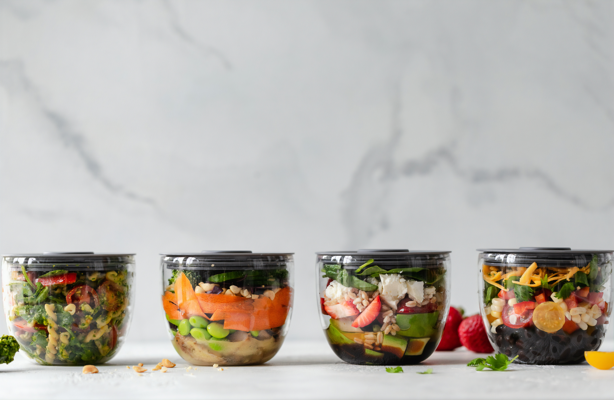

The Community Cafe
Bringing everyone to the table
About Us
Welcome to The Community Cafe where the menu is everchanging and where everyone has access to fresh and filling meals. Using diverted food we aim to eliminate the majority of food waste in our local area and bring everyone to the table. All are welcome here to have a warm meal, a drink and the space to unwind with a book or a boardgame.
Open Mon - Fri 8am - 4pm
What is diverted food?
Put simply, diverted food is food taken from its current course to a waste facility. The food we take is the bruised fruit or misshapen vegetable deemed not attractive enough for the store shelf that would otherwise find itself rotting in a landfill in a week's time. We do not take food that is not suitable for consumption. With this food, donated to us through our partnerships with local businesses, we are able to feed the hungry, reduce waste and love our planet with fresh and interesting meals. No two days are exactly the same which means with creativity and heart, our menu changes depending on what is available making for an interesting dining experience for you.
Donate
Every little counts and your support matters. Please consider donating to us here or learn more about alternative ways in which you can get involved.
How to get involved
As a non-profit charitable organisation, we rely on the generosity of our patrons to make this all happen. Here's how you can help.
We are run for the community and from this community, we are run. Please consider donating either time or money and helping those less fortunate. We believe in health, dignity and community above all else and we hope to see you here soon.
Subscribe to our food box
Diverted right to your door. Can't get enough of fresh and affordable food? We are now offering food boxes for you to pick up at our warehouse next door and take home with you. Ask in store or contact us using the form below to subscribe to our food box and don't miss out on the chance to be featured on our Instagram page. Every week we will pick a winner from entries found on #CCwastenotrecipe, the winner will be the person who makes the most of their box and pushes their creativity to the limits!
Previous #CCwastenotrecipe winners
2020 has gotten off to a fantastic start with some inspiring and delicious looking meals made from the ingredients in our subscription boxes.

{kind=link}
{kind=link}
{kind=link}
{kind=link}
Get in touch
Whether you're interested in volunteering, hiring our space for your event or have any questions, we at The Community Cafe would love to hear from you. Please fill the form below and someone will reply to you within one business day.
© The Community Cafe. All rights reserved. Design: HTML5 UP & Carly Couch-Burden.